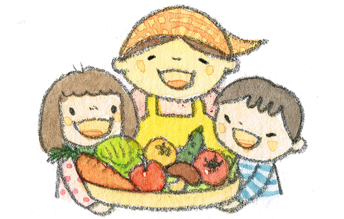
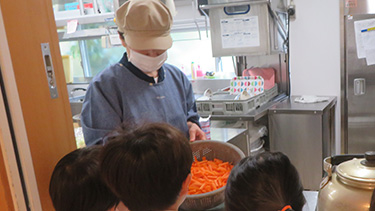
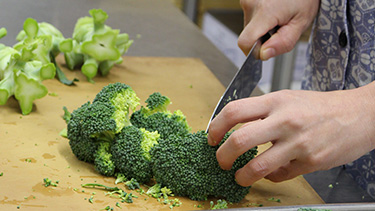
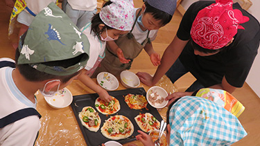
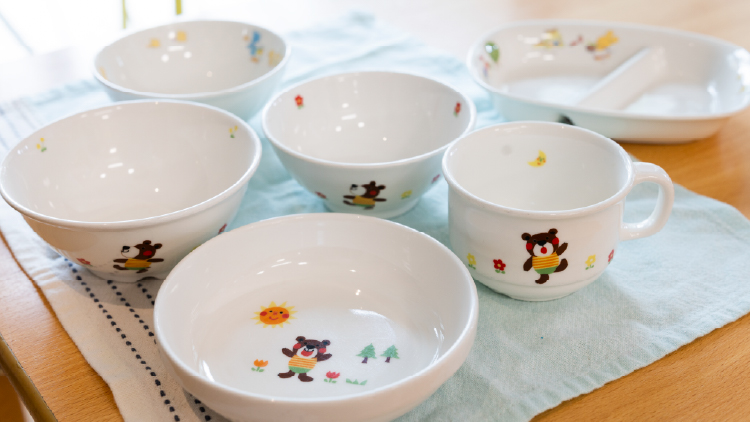

給食室も一体となって
子ども達の育ちを支えます
大好きなお友達や先生といただく食事は、心と身体の栄養となる、大きな大きな喜びです。すべての物を与えてくださる神様と、作ってくださった方の顔を思い浮かべ、感謝していただきます。
現在は、幼稚園部門・保育部門ともに週5日給食を実施しています。毎日、できたての温かい食事を囲む時間は、子どもたちにとって安心と楽しみに満ちたひとときです。 また、厨房スタッフが実際に保育室に出向き、子どもたちの食事の様子を見守ったり、子どもたちの声を聞いて献立や調理に生かしたりすることで、給食室も一体となって子どもたちの育ちを支えています。


できたてへのこだわり
幼稚園専属の管理栄養士・栄養士が、献立から調理まで担当し、幼稚園の給食室で調理され提供される自園給食です。保育室にも、美味しそうな香りが届きます。子ども達は、温かいものを温かいうちに食べることができます。

食材へのこだわり
野菜は地元のものを中心に、お米は特選米、お肉は国産100%のものなど、直接子どもの口に入る大事な食事だからこそ、添加物の少ない安全な食材を厳選しています。

行事食へのこだわり
日本の伝統文化も大切にし、６月は水無月、９月はお月見団子、１月はおせち料理のメニュー、節分にはイワシと海苔巻きなどと、日本の行事にあわせて献立をたて、食文化も学びます。

献立へのこだわり
栄養士が年間を通してテーマを設け、献立に工夫を凝らしています。世界の料理・ご当地メニュー・野菜の日など、子どもたちが新しい味に出会える取り組みを行っています。また、３学期には年長児にアンケートを実施し、《リクエストメニュー》として給食提供をしています。子どもたちの思いが形になるひとときです。

食器へのこだわり
毎日の食事には、陶器のお茶碗やお皿、汁椀を使用しています。本物の食器に触れることで、子どもたちは“ものを大切に扱う心”や“食事を丁寧に味わう姿勢”を自然に育んでいます。